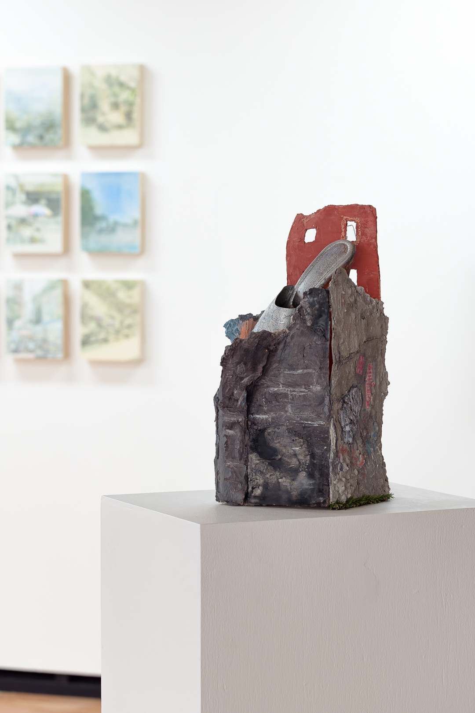
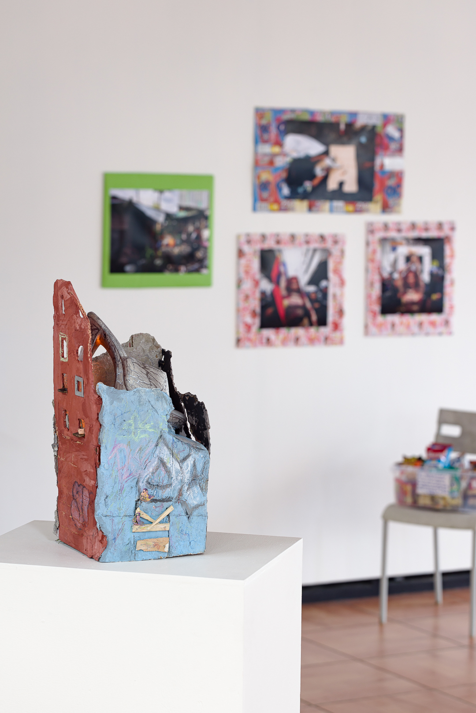
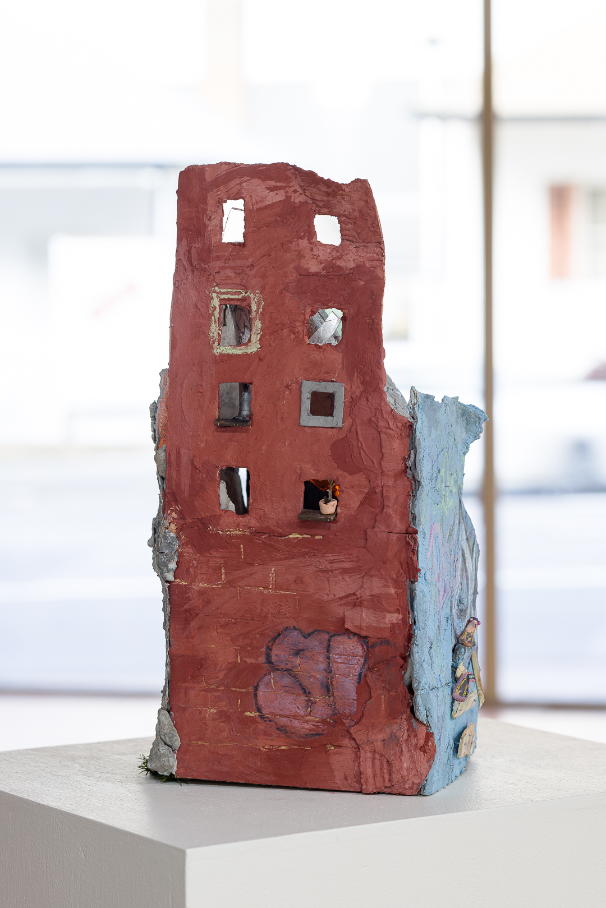
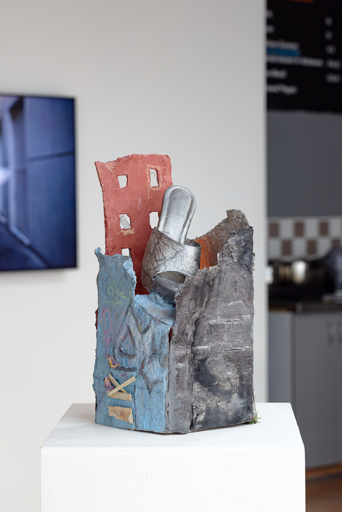
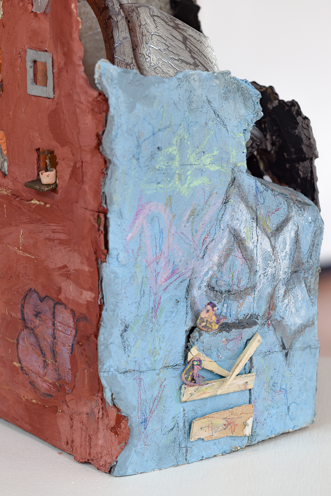
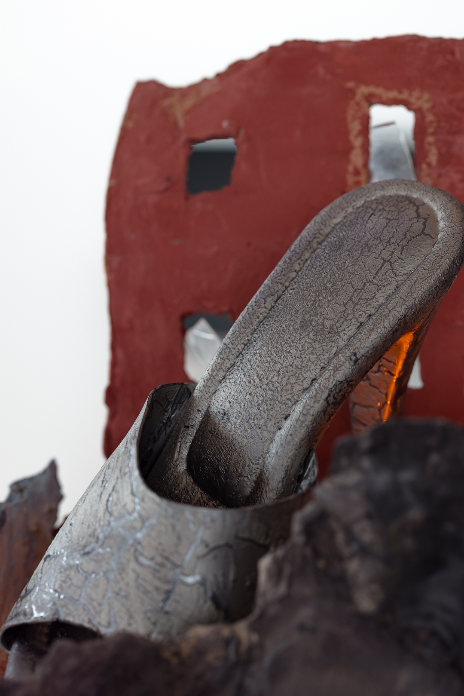

What shall I render, 2025.
Mixed-media sculptural installation. Concrete, plaster, timber, concrete oxide, house paint, nails, oil pastel, clay,
cardboard, liquid nails, pleaser, fragrance diffuser, salted caramel fragrance oil, astroturf, diamonte.
"What shall I render" is a mixed-media sculptural installation generated from the language and
materials of built urban environments. The title of the work references a 2025 @woahhvickyyy
tweet.
In combining construction trade materials, visual reference, movement and scent, an event both
familiar and unfamiliar emerges. The scene visually and structurally questions the perceived
permanence of public space and infrastructure. It instead proposes a relational dynamic
contingent on individual and collective participation, and considers how agency can be insisted
upon when these relations are disrupted.
Shown in Domain at Pari.